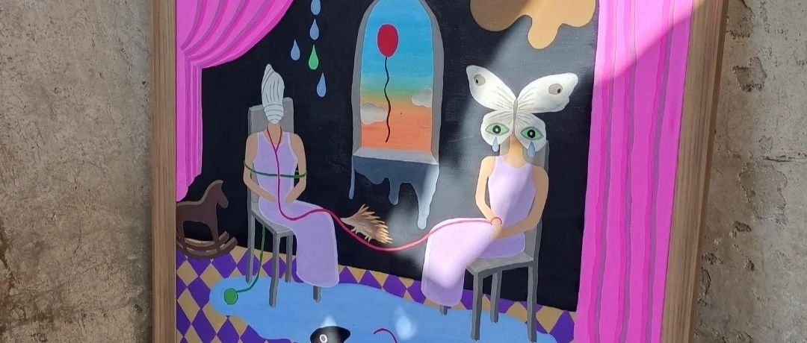

《油畫之緣》
當！
喜歡作品的同時，
我還默默的關註者作品的售賣時間。
記得這次售賣的時間是，
2021年8月31日上午8点30开售，
售賣的作品有:
《有乌德琴和椭圆窗的房间》
《缅甸女子》《我在睡梦中乱想》
《哭泣的女子11》《在深海中寻找》
《蝴蝶与男孩》《羽毛》《放风筝的人》《存在》《两个人的蜕变》
《一对夫妇的肖像》《美丽的慌乱》
我提前一天加購了，這四副作品
我也讓遠在日本的朋友幫我搶購
我喜歡的有四副作品
《緬甸女子》《兩個人的蛻變》
《存在》《放風箏的人》
從每一副作品中可以看出，
作者的心情和心靜，
當售賣 ，搶購的時候，
可能是購買作品的人太多，
我喜歡的作品，
秒沒！
我一副作品都沒有搶到，
幸運的是，
遠在日本的朋友幫我搶購了，
兩幅作品
《緬甸女子》
《和兩個人的蛻變》
當我和日本朋友聊天的時候，
他說你很喜歡這幾副作品，
我說當然。
他又說你能了解他所表達的是什麼嗎？
我說每個人的，
環境不一樣，
認知不一樣，
表達也不一樣，
喜歡就好，僅此而已。
他說:這是三個月的生活費，
我說:我喜歡這幾副作品，如果我買不到
我會寢食難安 ，會感到遺憾，
如果我需要“它”我不會買“它”。
《緬甸女子》
記錄者 年代的不同
人物的形態和新的表達方式
時間的交替 ，言語的轉換。
《兩個人的蛻變》
蠶和蛹的蛻變。
我比較喜歡這幅作品。
（個人理解）
大幕的開始與結束，
童年的木馬和氣球，
蠶和蛹的蛻變，
化繭成蝶的歷練，
綠毛線和紅毛線的交織，
當一束光打在蝴蝶的上面，
“它”有了新的生命，
這幅作品和我現在的我很像！
期待《化繭成蝶》……